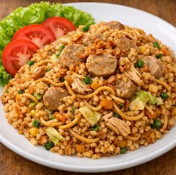
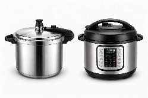
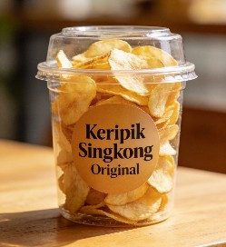

Pernahkah Anda merasa bingung saat ingin sarapan atau makan malam, harus memilih antara nasi goreng atau mie goreng?...
Halo, pecinta kuliner rumahan! Siapa di sini yang suka tahu putih, tapi ingin variasi tahu yang lezat dan ada rasanya?...
Kalau Anda ingin mencoba masakan daging sapi yang berbeda dari biasanya, resep ini bisa menjadi pilihan yang menarik...

Pernahkah anda mencoba membuat es krim di rumah, tapi hasilnya justru keras seperti batu es atau berbutir kasar?...

Kuliner Sunda dikenal dengan konsep "Segar, Asin, Pedas" yang selalu berhasil menggugah selera. Di antara banyaknya hidangan khas Sunda...

Nikmatnya Kerang Hijau Bumbu Kuning. Kerang hijau merupakan salah satu hidangan laut (sea food) favorit banyak orang karena rasanya gurih dan teksturnya lembut...

Siapa yang bisa menolak kelezatan waffle hangat di pagi hari atau sebagai teman minum teh sore? Waffle memang makanan yang sangat...

Siapa yang bisa menolak segarnya semangkuk salad buah di sore hari yang panas? Di Indonesia, salad buah bukan sekadar hidangan...

Sayur asem biasanya dikenal sebagai masakan rumahan yang sederhana. Tapi sebenarnya, dengan sedikit kreativitas, sayur asem...

Siapa yang tidak tergoda dengan semangkuk ayam berkuah hangat? Mulai dari soto ayam, opor, gulai, hingga sup ayam, hidangan ini...

Apakah Anda pernah ingin bisa memasak daging yang super empuk hanya dalam waktu singkat? Jika iya, panci presto (pressure cooker)...

Anda bisa membuat keripik singkong dengan cara di iris tipis dan langsung digoreng, namun hasilnya tidak selalu renyah...